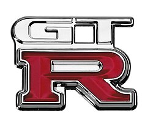
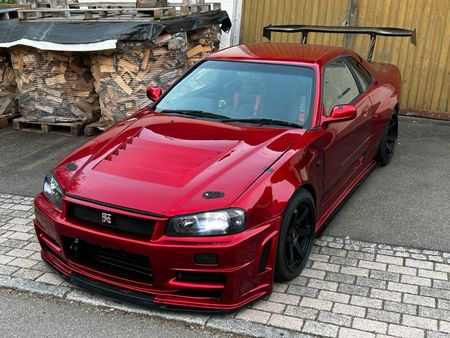
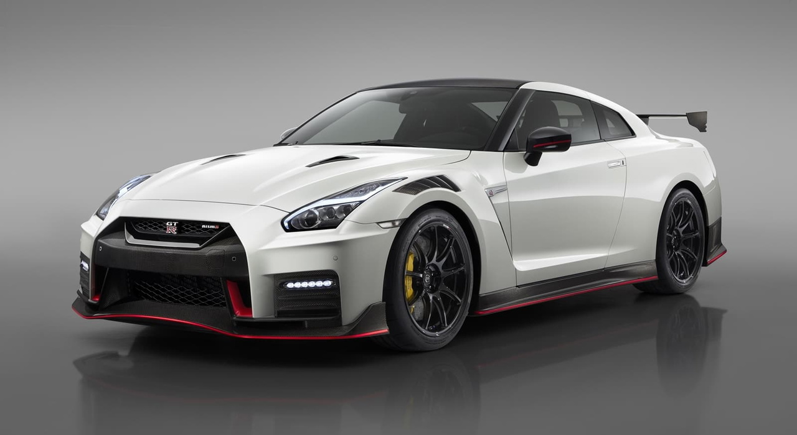
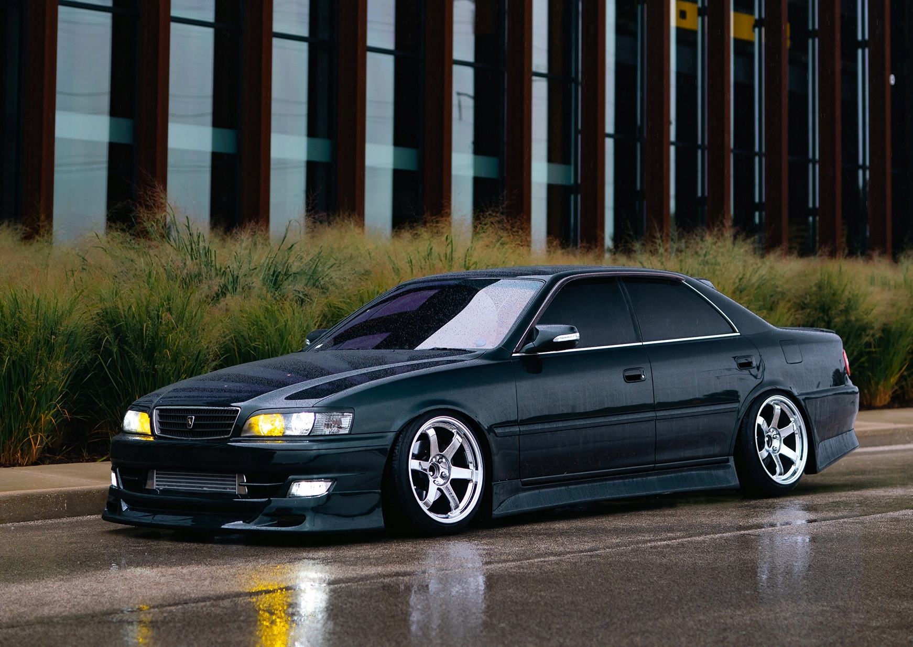
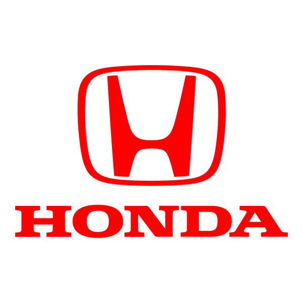
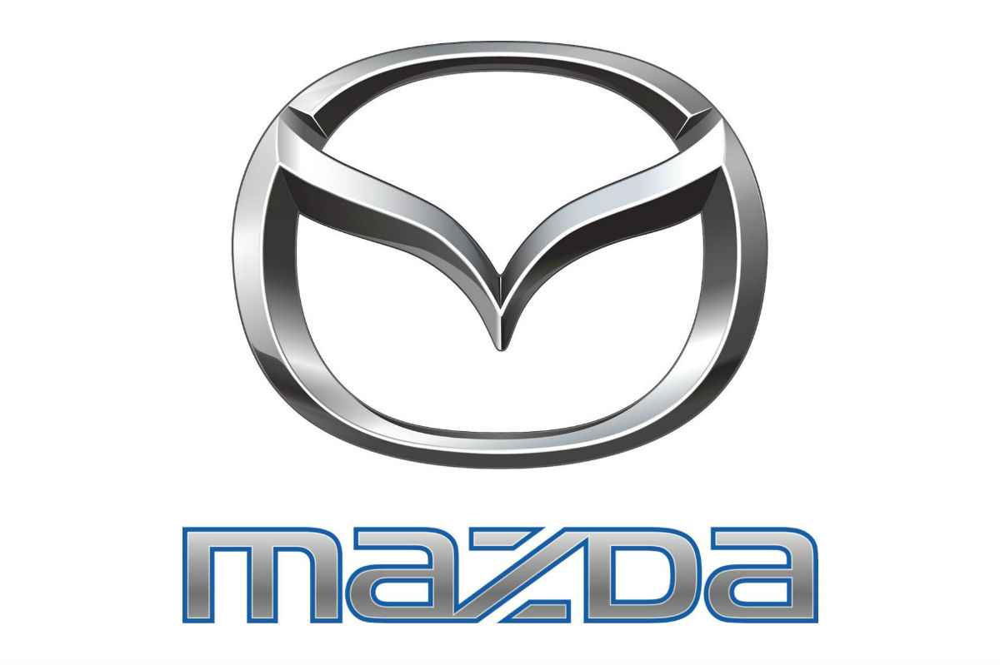

Aquest lloc utilitza cookies per millorar l'experiència.
Veluxe
Secció JDM - Japan Domestic Market
JDM significa Japan Domestic Market: són els cotxes esportius i de prestacions que les marques japoneses van crear originalment només per vendre al Japó entre finals dels 80 i principis dels 2000 (encara que avui el terme s’ha ampliat a tot el que respira aquella filosofia).
Per què són tan especials i per què ens tornen bojos? Perquè durant aquells anys el Japó vivia una bombolla econòmica brutal i les marques es van posar a competir com bojos a crear els cotxes més ràpids, tecnològics i divertits del planeta… però sense límit de preu ni de bogeria, perquè el mercat local ho pagava tot.
Resultat? Cotxes amb motors petits però capaços de girar a 9.000–10.000 rpm, tracció total ultra-sofisticada, aerodinàmica activa, turbos de ceràmica, titani per tot arreu i una qualitat de construcció que avui encara fa vergonya a molts superesportius europeus.
Nissan (Secció GT-R)

Història
El Skyline GT-R va néixer el 1969 i va dominar les carreres japoneses. El 1989 va arribar l'R32, batejat 'Godzilla' pels australians perquè destrueix qualsevol rival. Avui el GT-R R35 (2007-actualitat) segueix sent un monstre tecnològic amb tracció total i llançament brutal.
Curiositat que no Sabies
Al Japó el GT-R R32 matricula especial (nomes la pot tenir gent major de 35 anys i amb molt bon historial de conducció) perquè era el cotxe preferit dels carrers il·legals.
Cotxes de Nissan (GT-R)

Nissan Skyline GT-R R34 (1999-2002)
El rei absolut del JDM. El Turisme Fast & Furious. Motor RB26DETT 2.6 biturbo oficialment 276 CV., per tot hom sap que poden modificacions fàcils arribava a 500-600 CV sense problemes. Arribava posterior, canvi manual de 6 velocitats. L'últim Skyline GT-R abans de l'R35. Avui és un icona, i els preus pugen com l'escuma (més de 100.000 € per un en bon estat).

Nissan GT-R R35 Nismo (2007-Avui, Versió Actual 2024-2025)
El 'Godzilla' modern que va humiliar Europa quan va arribar el 2007 va arribar amb 480 CV i va fer 7:29 a Nürburgring... i des d'aleshores no ha parat de millorar. L'última versió Nismo 2025 té 600 CV reals del VR38DETT 3.8 biturbo fet a mà, tracció total, frens carboceràmics i una rigidesa que el fa real (no només en línia recta). Capaç de lapidar el planeta en mans d'un pilot real (no nomes en placa). Ràpida unitat NISMO es munta a mà a Yokohama i la porta un sol a un pilot japonès que la prova personalment.
Toyota (Secció Esportiva)
Història
Toyota va sorprendre a tothom amb el Supra A80 (1993-2002) i el seu motor 2JZ-GTE llegendari. Després de molts anys, el 2019 va tornar el Supra A90 (desenvolupat juntament amb BMW) i va recuperar el tron dels esportius japonesos però brutals.
Curiositat que no Sabies
El motor 2JZ-GTE del Supra Mk4 és tan resistent que la comunitat de tuning arriba fàcilment a 1.000-1.500 CV... amb el bloc original! És l'únic motor japonès que no es trenca gairebé mai.
Cotxes de Toyota
Toyota Supra A80 / Mk4 (1993-2002)
El cotxe que va fer que el món sencer aprengués a dir '2JZ'. Motor 2JZ-GTE 3.0 biturbo seqüencial: 280 CV oficials al Japó, una resistència legendària que permet modificacions fàcils a 800 CV sense obrir el motor. Compleix amb manual de 6, aerodinàmica completa de sèrie. Acceleració 0-100 en 4.6 s amb el motor complement per sota dels 5 s. Disseny atemporal, fars retractils, aéreo gegant opcional, canvi a fons. Avui és un icona del tuning.

Toyota Chaser Tourer V (JZX100, 1996-2001)
La berlina 'edificant' que tothom volia al Japó. Motor 1JZ-GTE 2.5 biturbo de 280 CV, tracció posterior, canvi manual de 5 (raríssim) o automàtic, i un xassís tan bo que és la base preferida dels drifters i dels que volen un cotxe 'ideològic' per a diari de bèstia per a la pista. Pesa uns 1.400 kg, feia 0-100 en uns 6 s de sèrie i amb mods turbo més gran, ECU... arriba fàcil a 400-500 CV sense perdre fiabilitat. Avui manual en bon estat ronda els 25.000-45.000 €. Curiositat brutal: molts policies japonesos utilitzaven Chaser ocults per caçar els il·legals... perquè ningú ho esperava!
Honda / Acura

Història
Honda és la marca que va demostrar al món que un cotxe petit i 'normal' pot ser més divertit que un supercar. El primer NSX (1990) va ser el primer supersportiu japonès real, i des de llavors prioritzen el plaer pur de conduir.
Curiositat que no Sabies
Senna deia del NSX original: 'És el millor cotxe que he provat'. Va ajudar a desenvolupar-lo i posar a punt el xassís.
Cotxes de Honda
Honda NSX Type R (1992-1995)
El primer NSX era un supercar accessible, però el Type R va ser el primer 'track-focused' japonès: 280 CV del V6 3.0, xassís alleugerit (menys 120 kg), suspensió més dura i un maneig que feia vergonya als Ferrari de l'època. Va ser el primer cotxe de producció amb xassís d'alumini 100%. Només 483 unitats, totes per Japó. Avui val més de 100.000 € i és considerat el millor NSX per puristes.
Mazda

Història
Mazda sempre ha estat la marca dels motors rotatius Wankel fins al 2011. Van guanyar Le Mans el 1991 amb el 787B (únic cotxe japonès que ho ha fet) i segueixen sent sinònim de diversió amb l'MX-5, el roadster més venut del món.
Curiositat que no Sabies
Mazda és l'única marca del món que va guanyar 24 hores de Le Mans amb un motor que no és de pistons (el 787B amb rotatiu el 1991). Quan van guanyar, els francesos van canviar les regles per prohibir els rotatius en competició!
Cotxes de Mazda
Mazda RX-7 (FD3S: 1991-2002)
El rotatiu més bonic i pur: 13B-REW biturbo seqüencial: 240-280 CV oficials (per tot hom sap que amb mods arriba a 500 sense obrir). Pesa només 1.300 kg, 50:50 de distribució, 0-100 en uns 5 s. El FD és tan bonic que sembla un cotxe de concepte. Avui és un icona del tuning i JDM, amb preus que pugen cada any (80.000-150.000 € per un en estat perfecte).